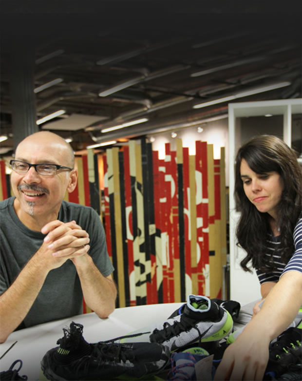
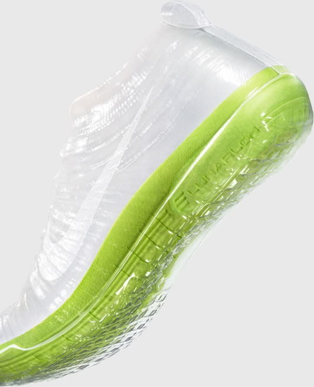
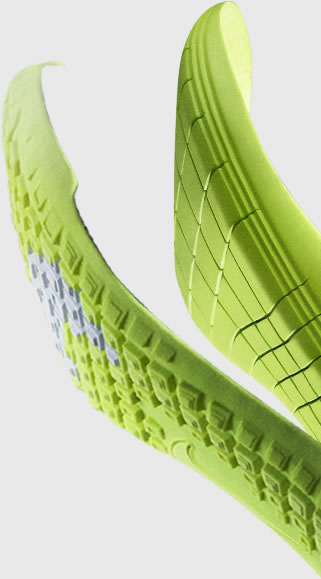
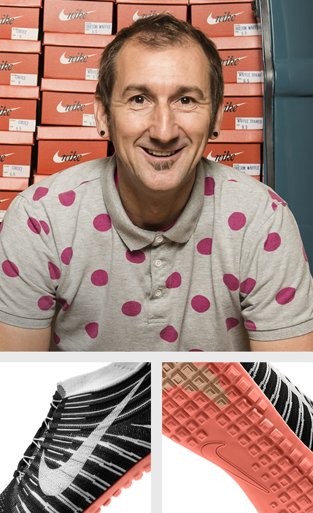
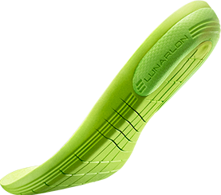
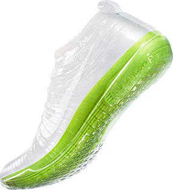
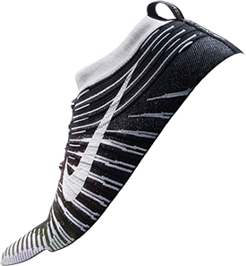
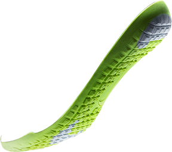
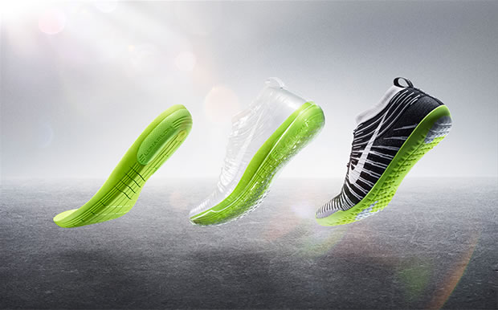
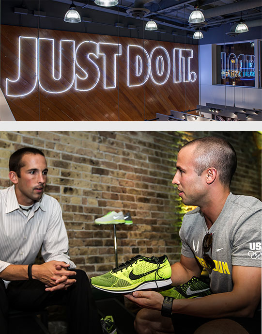

Journey


Put them together, and that’s the Nike Free Hyperfeel: a revolutionary running shoe designed to act as a seamless extension of the foot. But the seeming simplicity of the Nike Free Hyperfeel belies a more complex story behind the scenes – a vision born a few years ago and an ensuing journey to achieve it. Sketches. Prototypes. Meetings. Adjustments. Wear tests. More adjustments. Frequent flyer miles. And repeat. Try, and try again, to get it right. The end result? A shoe that gives you everything you need and absolutely nothing you don’t, freeing the foot to move naturally while protecting it from the environments in which it competes. Below, we follow the journey of the Nike Free Hyperfeel through the lens of a few of the employees who helped bring this groundbreaking shoe to life.

It all started back in 2007, when footwear designers Tobie Hatfield, Eric Avar and Kevin Hoffer created a prototype called the Nike Free Revolution. The shoe reduced layers between the foot and the ground, but was still traditionally constructed using different pieces sewn together – not allowing for that truly seamless, natural motion sensation. “Our goal with Nike Free was always to create a sensation of running on grass,” Holmes says.
The design and development teams continued to experiment with different materials and methods of construction. They got pretty close, in fact. But they weren’t quite there. Then one day, NIKE, Inc. President and CEO Mark Parker was leaving a meeting when he spotted one of the prototypes on the table. He liked what he saw, and suggested the team find a way to finish it.
Game on. Time to deliver. Holmes came on board and went back to the drawing board for a redesign with his teammates Jeongwoo Lee, Bryant Klug, Fanny Ho and Isa Crumeyrolle. It wasn't easy; Holmes and his team designed seven completely different shoes in less than 12 months before they had something they were proud of. And when Nike Flyknit came along, it solved one of their biggest challenges. “Flyknit allowed us to create an upper that acts like a second skin, stretching and adapting with the foot as it moves,” Holmes says.
Watch
Video
Click to see

With the design complete, the development team faced a tall task: Engineering an unprecedented shoe on a very tight schedule. “I’d say it was one of the most challenging products I’ve worked on,” says Hurd, project director. “We went through so many different versions going back and forth with our manufacturing partners.”
Back and forth is right: Kelley flew to Asia five times in about as many months to work with the manufacturer on adjustments. “We ended up getting them T-shirts and presents to thank them for all of their work,” she recalls.
The team also found that solving one issue tended to create others in its place. “It was a lot of trial and error and experimentation,” Kelley says.
One experiment that worked: Siping Lunar foam, which hadn’t been done before. It enabled the natural motion of Free while still providing the right level of cushioning and responsiveness.
The team also experimented with different types of knit for the upper until they landed on flat knit, which gave the robust and consistent structure they were looking for.
“The Peg 28 has 47 components, but each piece solves for something, whether it’s providing more cushioning or more support, and so on,” Hurd says. “Our challenge with the Hyperfeel was getting each of its five pieces to multi-task and solve a bunch of different issues at once.”




Wear testing is a crucial phase of the product creation journey, and that’s where Julie Styner comes in. And, like Hurd and Kelley, she found herself in uncharted waters when it came to the Hyperfeel.
“Typically we create test plans based on specific things we want to test, and we then execute against that plan,” Styner says. “And most of the time we have previous versions of the shoe to reference.”
This time there was no precedent – and the complexity of the development process and shortened timeline didn’t allow for a standard test planning process. It was a matter of adapting the test strategy to whatever the needs of the project were at the time. “Sometimes we just needed to get a lot of miles on the shoe, and sometimes we needed to test
something very specific, like the way the upper fit in a certain area of the foot,” Styner says. “We figured things out as we went.”
Styner says wear testers’ reactions to such a unique looking shoe varied from intrigued to skeptical. “Some testers had run in so-called ‘minimal’ shoes before, so they were more comfortable with how it looked than those who hadn’t,” she says. And since then, some have become devoted Hyperfeel converts. “One tester loves it so much that he won’t run in anything else.”
Cha’s role is to look at products from the consumer’s perspective, and then determine the consumer proposition and branding strategy. The Nike Free Hyperfeel presented a unique challenge: It was a Free shoe, but it didn’t really look like one at first glance. “We talked a lot about the idea that Free doesn’t necessarily have to just be about flexibility,” Cha says. “It’s also about being able to sense your environment better. The drop-in Lunar midsole is incredibly malleable, so it protects you but still conforms to the surface you’re running on – which, in turn, can affect how you move. So the proposition we centered on was the idea of sensing more to move better. And that eventually became ‘Feel a better run.’”
With the overall Brand Marketing strategy in place, it was Brundage and the Global Retail Brand Presentation team’s job to determine the best way to tell the product story to consumers in a clear, compelling way.
“The Brand Design team had a Japanese artist create a mold of the shoe that exposed how the foot rests right on the Lunarlon cushioning with no extra layers, which was used for Brand photography,” Brundage says. “As we brainstormed how to tell the story at retail, we kept coming back to this mold. We thought, ‘Maybe this is what we need to put in front of consumers to help them understand.’"
So Brundage and team worked with the artist to produce a second mold for the women’s shoe – both would be reproduced in large quantities to use in Nike stores’ initiative displays.


The Nike Free Hyperfeel’s creation journey may be at an end, but for Trevor McGowen, it’s just beginning. As a Nike Running Pacer for the Chicago area, McGowen serves as the crucial link between the Nike Brand and specialty running accounts, their associates and consumers. His role includes educating associates on new products; developing marketing plans with store owners and managers; working on the retail floor; and delivering consumer insights back to various Nike categories and functions.
The Hyperfeel’s retail debut is set for Sept. 5, and McGowen is looking forward to introducing it to Chicago runners. “This shoe will have limited distribution, so the exclusivity alone will drive a lot of energy,” McGowen says. “But because it’s so different, Pacer support and education will be critical in helping runners understand how innovative and amazing this product really is.”
That said, McGowen predicts plenty of interest. “We haven’t really had anything like it in our line before, so I definitely expect it to make a splash in the industry.”
click
to go